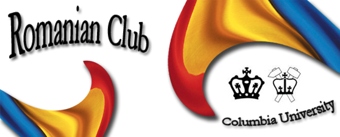
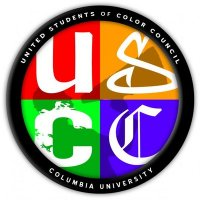

Student Clubs
Many Columbia University Student Clubs will be joining us to make Matsuri 2009 even better! So be sure to check their booths out.
Asian American Alliance (AAA)
-
Kokikai Aikido
Check out their website at http://www.ldeo.columbia.edu/~sanpisa/aikido/main.htm
-
Anime Club

-
Chinese Students Club (CSC)
New York Japanese Students Association (NYJSA)
-
Romanian Club
 -
Thai Students Association (TSA)
-
United Students of Color Council (USCC)
